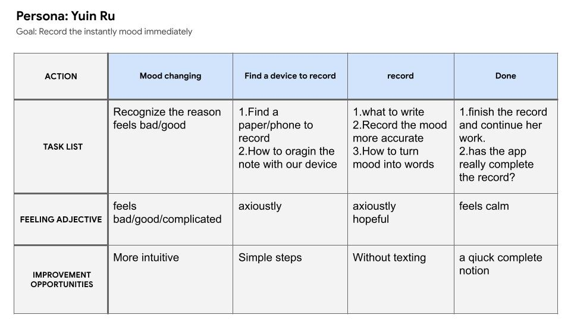
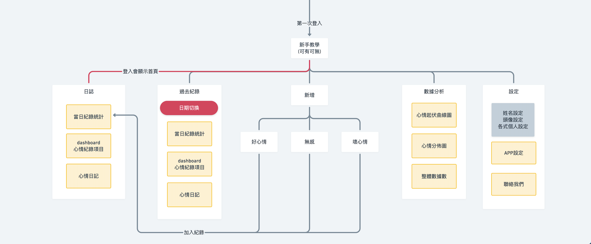
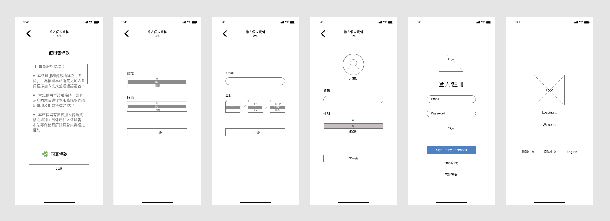

Role
UI/UX Desinger
Tools
Miro for FlowChart
Miro for Wireframe
Illusturator
PhotoShop
Adobe Xd
Duration
12/2020
Concept
It a mood recording app for every human beings. Users can easily record their mood stitus immediately at any time.
The app can help user analyize their own mood stitus and more understand body info to improve uesr's mental health.
Ideate
At first, This project was only a graphic design practice of mine. Then, I found out mood issuses has been bothering every humans. It's easy to have different mental illness for everyone at nowadays. But mental illness aren't as simple as other disease can discover by physical pains. Also it's hard to explane to others, even docters.
I'm not a doctor, but I know it's unconfertable while we can't find out the reason while we feels down. So I decide to build a app for those ueser that need to record their immediate mood status.
Persona
User Stories
As a normal office worker, I want a good device can record my mood status to help me discover the reason my upset.
As a popular student at school, I want to analyize the problem by rocord every moment while I change my feeling, to recognize who the person that makes me feels unconfertable.
User Journey Map
FlowChart
WireFrame
Design
Style
To create a unique portfolio website,"Let user more focus" my main idea of this projects. Obliqe rectangle is the main idea of my web, change a bit of angle on the surface can make a big different on the visiul presentation.
The color that I choose, dark gray and dark red with a little pink,but only symbols the steady of my website, and also innovatly.
Color
Interaction
"Record user's mood immediately" is the most important part of this app. I place the mood choosing buttom("+"buttom) the center of the tab bar at the botton, so users can hold the buttom then swip "Good mood" or "Bad mood" without second stip.
At the end of the day, Remooder will organize all your chooses then analyize it.
SignIn-Page Prototype
I use the FaceID on the app to convenient the users to signin, it's a good way to increase the speed to signin the app while they change their device. Also have three different languages chooses for users.
Home-Page Prototype
I set the most important information at the Home page, so the users can browse it simply. Remooder will analyize the opptions that user choose and drew in to a circle graph. Remooder display all the items that user pick, so the users can add some annotations on the good or bad items.
Remooder is not only a recording app, also is a diary. Users can write down all the things they meet, how's the day. The diary and the analyizes will be save at the data, and the user's can review it whenever they want.
LI-TANG CHEN
A UI/UX DEsigner
from Taiwan